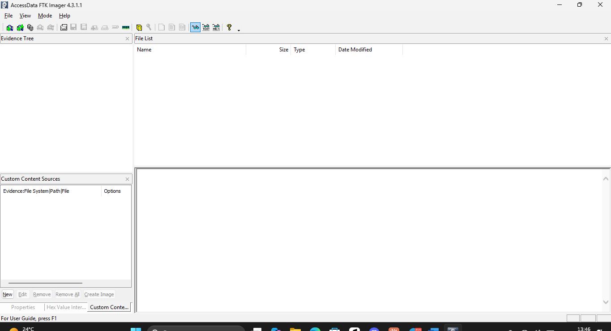
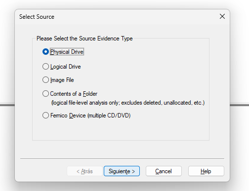
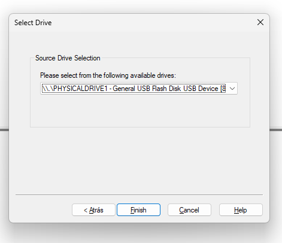
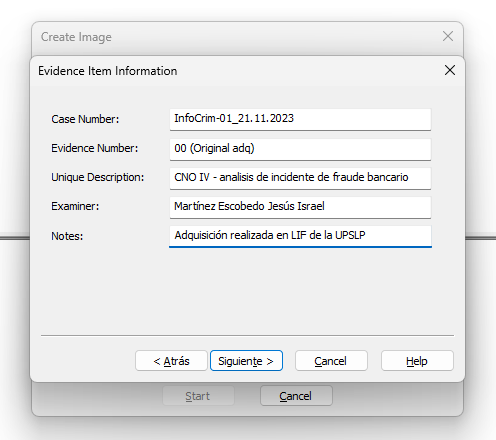
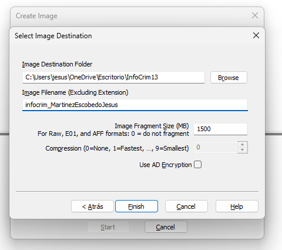
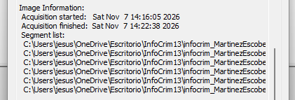
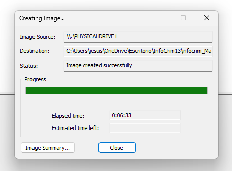
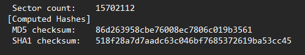
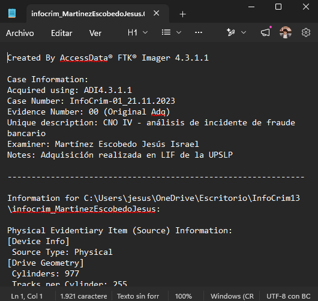

/// ACT16_FTK_IMAGER
> INF_CRIM // ACTIVIDAD_16 // FORENSIC_ACQUISITION...
Profesor: Servando Lopez Contreras
Jesús Israel Martínez Escobedo - 175325
La verdad en los bits: adquisición forense con FTK Imager
Informática Criminológica
Ingeniería en Tecnologías de la Información
Universidad Politécnica de San Luis Potosí
7 de noviembre de 2026
Objetivo
Realizar la adquisición forense de una memoria USB mediante una imagen bit a bit con FTK Imager, documentando cada paso, las marcas de tiempo y los hashes de integridad (MD5 y SHA-1) que respaldan que la copia es fiel al original.
La adquisición es la primera de las cinco fases del análisis forense digital (adquisición, preservación, análisis, documentación y presentación). Trabajar siempre sobre copias bit a bit permite conservar la evidencia en su estado original y presentar resultados verificables y reproducibles.
Case Number: InfoCrim-01_21.11.2023
Evidence Number: 00 (Original adq)
Unique Description: CNO IV - análisis de incidente de fraude bancario
Examiner: Martínez Escobedo Jesús Israel
Notes: Adquisición realizada en LIF de la UPSLP
Herramienta: AccessData FTK Imager 4.7.1.2
Sistema: Windows
Metodología
El procedimiento se dividió en cuatro fases, de la instalación de la herramienta a la verificación de la imagen:
- Descarga desde exterro.com
- Instalación como administrador
- Apertura de FTK Imager
- File → Create Disk Image
- Physical Drive
- \\.\PHYSICALDRIVE1
- Formato Raw (dd)
- Datos del caso
- Carpeta InfoCrim13
- Fragmentos de 1500 MB
- Start y marcas de tiempo
- Hashes MD5 y SHA-1
- Archivo .txt de resumen
En una adquisición real es indispensable usar un bloqueador de escritura para que el equipo no modifique la evidencia. En esta práctica se omitió su uso por tratarse de un ejercicio de laboratorio.
Resultados
Parte I // Adquisición de la memoria USB
Datos de la imagen forense generada con FTK Imager.
Dispositivo adquirido
\\.\PHYSICALDRIVE1, interfaz USB, unidad removible, 7667 MB.
Hora de inicio
Sábado 7 de noviembre de 2026, desde la selección del ítem hasta hacer clic en Start.
Hora de término
Estado final: Image created successfully.
Tiempo transcurrido
Duración total de la adquisición.
Sectores copiados
Equivalen a un tamaño de datos de origen de 7667 MB.
Hash MD5
Suma de verificación calculada sobre la imagen.
Hash SHA-1
Segunda suma de verificación para validar la integridad.
Archivos generados
Imagen dd fragmentada en bloques de 1500 MB, más el archivo comprimido.
Parte II // Formatos de imagen forense
¿Qué es el formato Raw (dd)?
Copia exacta bit a bit (sector por sector) del dispositivo, guardada como una secuencia cruda de bytes, sin compresión, cabeceras, metadatos ni firmas adicionales.
¿Qué es el formato E01?
Expert Witness Format: estándar de imagen forense que guarda la copia junto con metadatos detallados, información del caso, compresión y hashes integrados para validar la integridad de la evidencia.
Diferencia entre SMART y E01
SMART (.s01) fue creado por ASR Data para su herramienta del mismo nombre; E01 fue desarrollado por Guidance Software para EnCase. E01 se volvió el estándar, con soporte nativo en casi todas las herramientas forenses, mientras que SMART es menos común y puede requerir conversión previa.
Los hashes MD5 y SHA-1 funcionan como huella digital de la imagen: si se recalculan después y coinciden, se demuestra que la evidencia no fue alterada. Junto con el archivo de texto que genera FTK Imager (datos del caso, geometría del disco, fechas y hashes), forman la documentación que respalda la cadena de custodia.
Evidencias
Capturas de pantalla del proceso de adquisición, en orden.
01 // FTK Imager en ejecución
Interfaz de AccessData FTK Imager 4.7.1.2 tras la instalación, lista para agregar evidencia.

02 // Create Disk Image
Desde el menú File se eligió Create Disk Image… para iniciar la adquisición.

03 // Selección del dispositivo de origen
En Select Source se marcó Physical Drive y se seleccionó la memoria USB: \\.\PHYSICALDRIVE1 - General USB Flash Disk USB Device.

04 // Información de la evidencia
Se capturaron los datos del caso: número de caso, número de evidencia, descripción, examinador y notas.

05 // Destino de la imagen
La imagen se guardó en la carpeta InfoCrim13 del Escritorio con el nombre infocrim_MartinezEscobedoJesus, en fragmentos de 1500 MB, sin compresión ni cifrado.

06 // Marcas de tiempo
Image Information registra el inicio (14:16:05) y el fin (14:22:38) de la adquisición, además de la lista de segmentos.

07 // Imagen creada correctamente
La ventana Creating Image muestra el estado Image created successfully y un tiempo transcurrido de 0:06:33.

08 // Image Summary y hashes
Resumen con interfaz USB, unidad removible, 7667 MB, 15,702,112 sectores y los hashes MD5 y SHA-1 calculados.

09 // Archivo de texto con el detalle del proceso
FTK Imager genera un .txt con el mismo nombre de la imagen, donde queda el detalle del caso, el dispositivo de origen y la geometría del disco.

Entregables
Documento de la actividad y Archivo txt generado.
Conclusión
La práctica permitió comprender el procedimiento de adquisición forense con FTK Imager y la importancia de generar copias bit a bit de los dispositivos de almacenamiento para preservar su información.
Se identificaron las características de los formatos RAW (dd), E01 y SMART, así como sus diferencias y aplicaciones. También se comprendió el papel de los algoritmos MD5 y SHA-1 para verificar la integridad de las imágenes adquiridas.
Finalmente, la actividad reforzó los conocimientos sobre adquisición, preservación y documentación de evidencia digital, y la necesidad de seguir procedimientos controlados y verificables para garantizar la confiabilidad de los resultados en una investigación forense.